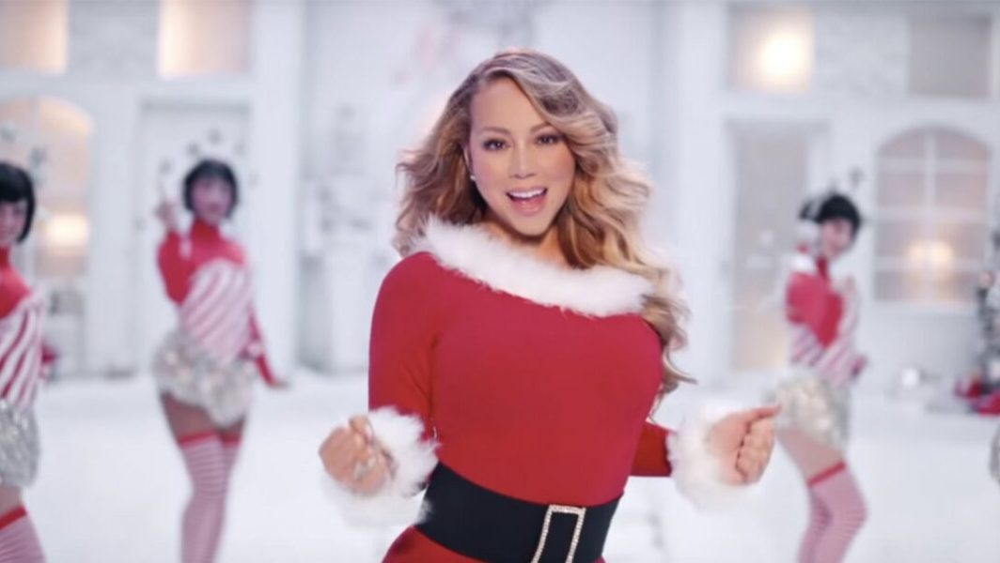
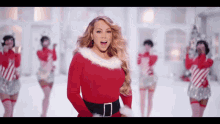
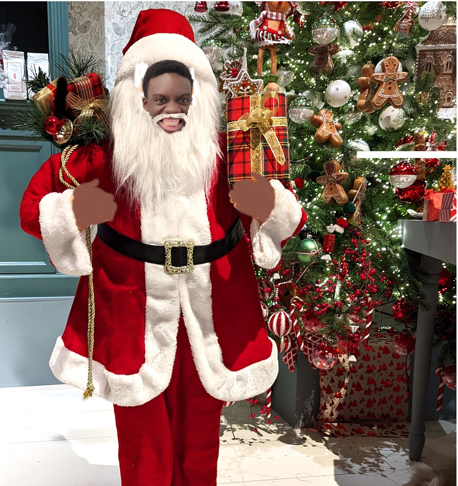

La petite surprise de Noël comme prévu : la traditionnelle musique de Noël reprise par Samuel en personne ! Ecoutez cette voix envoutante, ces harmoniques d'anges et son assurance légendaire ! Vous n'avez qu'à cliquer sur lecture pour assister en même temps aux talents artistiques de notre chère Mariah Carey.
c'est une image créée sur Gimp par les créateurs du site, elle est libre de droit :)